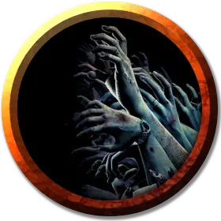

Рой конечностей зомби
Swarm of Zombie Limbs
Средний рой крошечной Нежити

Класс Доспеха 10
Хиты 22 (5к8)
Скорость 30 футов, лазая 30 футов
| мод | спас | ||
|---|---|---|---|
| СИЛ | 14 | +2 | +2 |
| ЛОВ | 10 | +0 | +0 |
| ТЕЛ | 10 | +0 | +0 |
| мод | спас | ||
|---|---|---|---|
| ИНТ | 3 | −4 | −4 |
| МДР | 8 | −1 | −1 |
| ХАР | 5 | −3 | −3 |
Сопротивление урону дробящий, колющий, рубящий
Иммунитет к урону яд
Иммунитет к состояниям захват, испуг, истощение, окаменение, опутанность, отравление, очарование, ошеломление, паралич, сбивание с ног
Чувства слепое зрение 30 футов (слеп за пределами этого радиуса), пассивное Восприятие 9
Опасность 1 (200 опыта)
Бонус мастерства +2
Особенности
Рой. Рой может занимать пространство другого существа, и наоборот, и рой может перемещаться через любой проход, достаточный для крошечной конечности. Рой не может восстанавливать хиты или получать временные хиты.
Необычная природа. Рой не нуждается в воздухе, пище, питье или сне.
Действия
Мультиатака. Рой совершает одну атаку комком нежити и одну атаку хватательными конечностями.
Комок нежити. Рукопашная атака оружием: +4 к попаданию, досягаемость 0 фт., одна цель в пространстве роя. Попадание: 5 (1к6 + 2) дробящего урона или 4 (1к4 + 2) дробящего урона, если рой имеет половину своих хитов или меньше.
Хватательные конечности. . Рукопашная атака оружием: +4 к попаданию, досягаемость 0 фт., одно существо в пространстве роя. Попадание: 7 (2к6) урона некротической энергией, и существо должно преуспеть в броске Силы Сл 12, иначе станет опутанным. Существо может повторять спасбросок в конце каждого своего хода, получая 7 (2к6) урона некротической энергией при провале. Существо освобождается, если проходит спасбросок, рой покидает пространство существа или рой умирает.
Описание
Среди нежити одинокий зомби является далеко не самой сильной угрозой. Однако ужас неуклюжих мертвецов заключается не в их индивидуальной угрозе, а в их численности, их настойчивости и их отсутствии чувства самосохранения. Толпа зомби погасит лесной пожар своим собственным пеплом или будет заходить в пасть дракона, пока монстр не задохнётся. В ходе своих неумолимых маршей зомби могут получить всевозможные травмы, что потенциально может превратить их в массу ползающих конечностей (см. блок статистики "
рой конечностей зомби [swarm of zombie limbs]"), заразить их ужасными болезнями (см. блок статистики "зомби-разносчик чумы [zombie plague spreader]") или сплести целую орду в одного гниющего титана (см. блок статистики "сгусток зомби [zombie clot]").
См. дополнительно статью: "Бестиарий: Зомби"